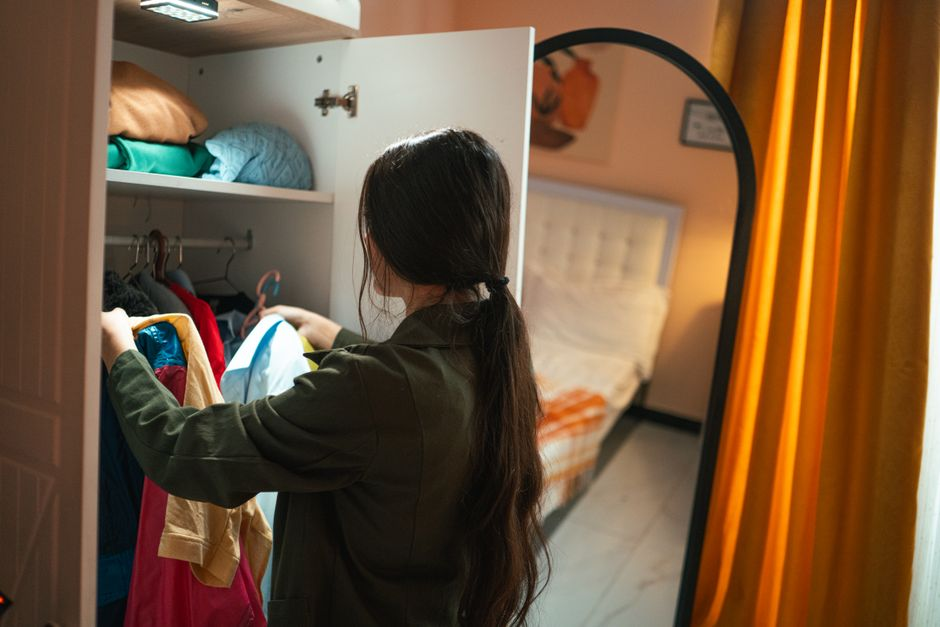

Comment ranger vos vêtements sans perdre de place

Photo: khezez | خزاز / Pexels
Pour ranger ses vêtements dans un petit espace, il s'agit surtout de trier, de plier intelligemment et d'utiliser la hauteur. Voici une méthode simple.
1. Faites le tri
Sortez tous vos vêtements et répartissez-les en trois groupes : à garder, à donner ou à vendre, à jeter ou à réparer. Un vêtement que vous n'avez pas porté depuis un an est un bon candidat au don.
2. Rangez par catégorie
Regroupez les hauts, les bas, les sous-vêtements et les accessoires. Placez ce que vous portez tous les jours à hauteur des yeux et des mains, et le reste plus haut ou plus bas.
3. Pliez à la verticale
Plier les vêtements en petits rectangles et les ranger debout dans un tiroir, comme des dossiers, permet de voir tout d'un coup d'œil et de gagner de la place.
4. Utilisez des cintres adaptés
Les cintres fins prennent moins de place. Gardez les cintres larges ou rembourrés pour les manteaux et les vestes lourdes. Évitez les cintres qui déforment les pulls : pliez-les plutôt.
5. Exploitez les espaces inutilisés
- sous le lit, dans des boîtes plates avec couvercle ;
- au-dessus de la tringle, sur une étagère ;
- à l'arrière de la porte, avec un organisateur à crochets.
6. Rangez les vêtements de saison
Mettez les vêtements hors saison dans des boîtes fermées. Lavez-les avant de les ranger. Le cèdre ou la lavande éloignent les mites ; évitez les boules à mites, dont les vapeurs sont irritantes et toxiques si elles sont avalées, surtout pour les enfants et les animaux.
7. Faites une révision régulière
Deux fois par an, au changement de saison, remettez de l'ordre et retirez ce que vous ne portez plus.
En triant, en pliant à la verticale et en utilisant la hauteur, un petit placard suffit souvent pour tout votre linge.
Produits recommandés
En tant que Partenaire Amazon, je réalise un bénéfice sur les achats remplissant les conditions requises.